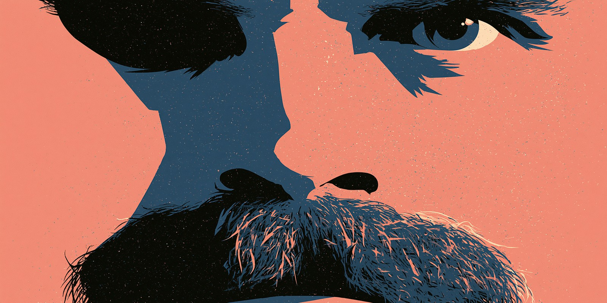

NIETZSCHE · A FILM · VOCABULARY EXAMINATION · PART IVTHUS SPAKE THE DIRECTOR
TAKE 1SOUNDSYNC
PRODUCTIONThus Spake Nietzsche
DIRECTORT.B.D. (probably you, after this test)
SCENEVocabulary — Film Production English
DATEPrincipal Photography — Day 1
IVPart

You have survived grammar. Now you must survive the set.
You are shooting a biographical film about Friedrich Nietzsche in Turin, 1889.
Budget is tight. The star keeps quoting his own character. The producer wants a happy ending.
Learn the vocabulary — or get fired.
FOOTAGE SHOT0 / 15
INT. FILM SET — DAY — ON SET ROLES
Scene 1
The Crew — Who Does What?
Match the film crew role to its correct definition. You're the new production assistant — get these wrong and you'll be fired before lunch.
Q 01
On Set Role
The person responsible for the overall artistic vision of the film — they direct the actors and decide how every scene is shot.
💡 The director leads the creative vision. The producer manages money and logistics. The cinematographer (also called Director of Photography / DP) controls the camera and lighting design. The gaffer is the chief lighting technician.
Q 02
On Set Role
This crew member is responsible for keeping each scene visually consistent — if Nietzsche has a moustache in shot one, he must have it in shot two, even if filmed a week later.
💡 The continuity supervisor (also called script supervisor) ensures visual consistency between shots. A boom operator holds the microphone on a long pole. A focus puller adjusts camera focus. A grip builds and moves camera equipment like dollies and cranes.
Q 03
On Set Role
The director shouts: "We need someone to stand in the same position as our lead actor while we set up the lights — our actor is too tired to stand there for 40 minutes." Who does she call?
💡 A stand-in substitutes for an actor during technical setup. A stunt double performs dangerous physical actions. An understudy (a theatre term) learns an actor's role to replace them if needed. An extra (or "background artist") appears in crowd scenes with no speaking lines.
EXT. TURIN PIAZZA — GOLDEN HOUR — CAMERA LANGUAGE
Scene 2
Camera Shots & Angles
Your cinematographer is waiting for instructions. Use the correct film vocabulary to describe each shot you need.
Q 04
Shot Type
You want a wide shot that shows Nietzsche alone in a vast Turin piazza, with the mountains in the distance, to establish his isolation and the setting of the scene.
💡 An establishing shot opens a scene to show location and context — usually wide. A close-up frames the face tightly. A two-shot frames two characters together. A cutaway briefly cuts to something related but outside the main action.
Q 05
Camera Angle
You want to make Nietzsche look powerful and imposing as he delivers his famous speech. The camera should be positioned ___, looking up at him.
💡 A low angle (camera below the subject, pointing up) makes a subject appear powerful or threatening. A high angle (camera above, pointing down) makes subjects look small or vulnerable. A Dutch angle tilts the camera to create unease or disorientation. Eye level is neutral.
Q 06
Shot Movement
You want the camera to follow Nietzsche as he walks through the piazza, gliding smoothly alongside him at the same pace. The camera itself moves through space.
💡 A tracking shot moves the whole camera through space (on a dolly, crane, or Steadicam). A pan rotates the camera horizontally on a fixed axis. A tilt rotates vertically on a fixed axis. A zoom changes the focal length of the lens — the camera doesn't move.
INT. PRODUCTION OFFICE — NIGHT — THE SCREENPLAY
Scene 3
Script & Screenplay Vocabulary
You're reading the screenplay for the first time. Choose the correct term for each script element described.
Word Bankslug lineaction linedialoguestage directionplot twistvoiceovercold openmontage
Q 07
Screenplay Term
In the screenplay, you see: EXT. TURIN PIAZZA — DAY. This header at the top of every new scene tells you whether the scene is inside or outside, where it takes place, and the time of day.
💡 A slug line (or scene heading) identifies every new scene with INT./EXT., the location, and DAY/NIGHT. It is always written in capitals in standard screenplay format. Scene headings are the skeleton of a screenplay.
Q 08
Screenplay Term
The film opens with Nietzsche collapsing in the street — before the title card even appears. There is no introduction. What is this called?
💡 A cold open drops the audience straight into the action before any titles, credits, or introduction. It is designed to grab attention immediately — a technique used extensively in TV and cinema. Common in thrillers and dramas.
Q 09
Screenplay Term
A sequence of short, rapidly edited shots showing Nietzsche writing feverishly: his pen scratching paper, candles burning down, dawn breaking — all condensed into one powerful 90-second scene without dialogue.
💡 A montage compresses time through a rapid sequence of thematically linked shots — often with music instead of dialogue. Famous examples: the training sequence in Rocky, the cooking scenes in Ratatouille. B-roll refers to supplementary footage that covers cuts (e.g., crowd shots, objects). A jump cut is an abrupt edit within a continuous shot.
INT. EDITING SUITE — LATE NIGHT — POST-PRODUCTION
Scene 4
Post-Production — Editing & Sound
The shoot is finished. Now you're in the editing suite. Choose the correct term for each editing or sound decision.
Q 10
Editing Transition
Instead of cutting sharply between the young Nietzsche and the elderly one, the director wants the image of the young man to slowly fade out as the image of the old man fades in simultaneously, briefly overlapping.
💡 A dissolve (cross-dissolve) overlaps two shots — one fades out as the next fades in. It often suggests the passage of time or a connection between two moments. A fade to black goes to a black screen (end of scene/act). A wipe replaces the image with a sliding edge. A smash cut is an abrupt, jarring cut for dramatic effect.
Q 11
Sound Design
During the scene where Nietzsche reads a letter from Wagner, you want to add the sound of a quill pen scratching — but this sound was not recorded on set. Your sound designer records it separately in a studio and adds it in post. This is called ___.
💡 Foley is the art of creating and recording everyday sound effects in a studio in sync with a film — footsteps, clothing rustles, writing sounds. Named after sound artist Jack Foley. Dubbing replaces dialogue in a different language. Looping (ADR) re-records actors' dialogue. Mixing balances all audio tracks together.
Q 12
Editing Terminology
The editor has assembled the first complete version of the film with all the scenes in order — but it's four hours long, unpolished, and includes every single take. This is the first working version.
💡 A rough cut is the first complete assembly — unrefined, often too long. A director's cut is the director's preferred version (not always released). A final cut is the approved, finished version. A test screening is when an early version is shown to a sample audience for feedback.
INT. PREMIERE — EVENING — FILM INDUSTRY VOCABULARY
Scene 5
Film Business & Festival Vocabulary
Your film is finished. Now you must navigate the world of film festivals, reviews, and distribution. Choose the correct term for each situation.
Q 13
Film Business
Your film about Nietzsche is being shown publicly for the very first time anywhere in the world — at a cinema in Cannes. What is this event called?
💡 A world premiere is the very first public showing of a film anywhere on earth. A premiere can also refer to a regional or national first showing. A screening is any showing of a film. A press junket is an organised media event where cast and crew give many interviews in one location.
Q 14
Critical Reception
A famous critic writes: "The film is self-indulgent, visually incoherent, and philosophically naive. It mistakes pretension for depth." She is writing a very negative review. What is the informal industry term for this type of review?
💡 To pan a film means to criticise it harshly — the review is called "a pan." A puff piece is an overly flattering, uncritical article. A pull quote is a short quote taken from a review to use in advertising ("★★★★ — extraordinary!" — The Times). A blurb is a brief promotional description on a poster or packaging.
Q 15
Film Distribution
After Cannes, a streaming platform offers to buy the rights to show your film in 190 countries simultaneously on the internet. What kind of distribution is this?
💡 A streaming release makes the film available on demand via internet platforms (Netflix, Amazon, etc.). A theatrical release opens the film in cinemas. A limited release opens in just a few cinemas, often in major cities first. The box office refers to ticket revenue earned in cinemas.
— Roll Credits —
—
out of 15
Audience Score
Director's Verdict
—
One Final Task
Pitch the Scene
Imagine you are pitching one scene from this film to a producer. Write 60-100 words describing the scene, using at least four of this lesson's film-production vocabulary words.